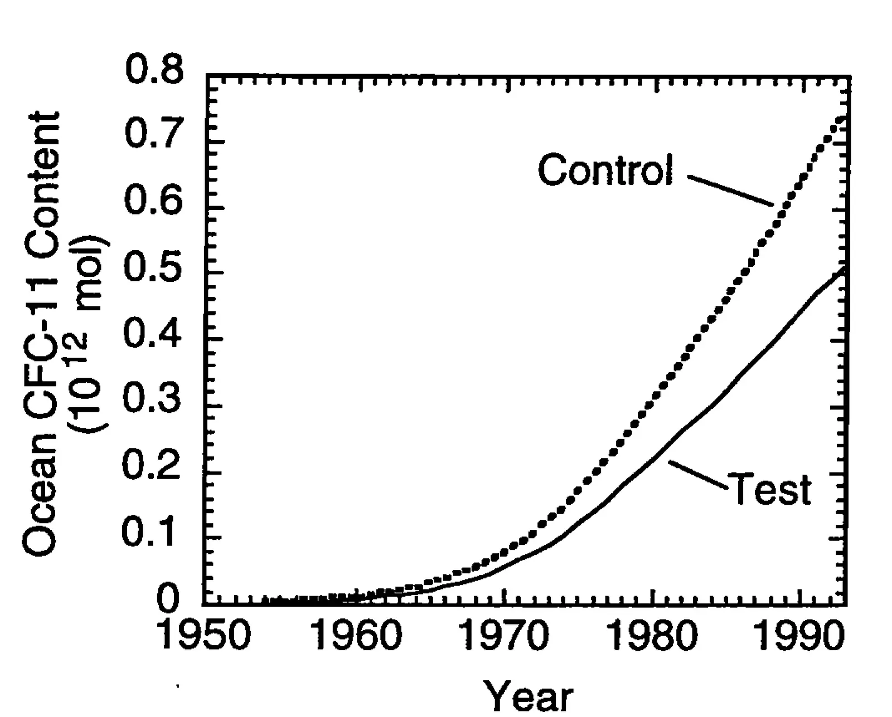

Sensitivity of simulated CFC-11 distributions in a global ocean model to the treatment of salt rejected during sea-ice formation
Key finding. Distributing the salt rejected during sea-ice formation through the upper 160 metres rather than confining it to a 25-metre surface layer lowers the modelled 1990 global ocean inventory of CFC-11 by about 30%, and lowers Southern Ocean column inventories by up to 90%, while generally improving the simulated CFC-11 and salinity fields.

What question did this research address?
Global ocean models were known to take up too much CFC-11 and probably too much anthropogenic CO2, particularly in the Southern Ocean. Something in the models was mixing surface water downward too readily.
When sea ice forms it rejects salt, making the water beneath it denser. A model grid cell 25 metres thick has to decide where that salt goes, and no study had asked whether that choice matters for transient tracers.
What did we find?
Two idealized simulations isolate the effect: a control that places rejected salt in the model's 25-metre surface layer, and a test that spreads it uniformly through the upper 160 metres beneath the forming ice.
Putting the salt deeper preserves vertical density gradients instead of destroying them, so grid-scale convection is inhibited — most strongly in the Southern Ocean, where the control was convecting most vigorously.
The consequence for tracer uptake is large. Global CFC-11 inventory for 1990 falls about 30%, and Southern Ocean column inventories fall by as much as 90%.
Both the CFC-11 and the salinity fields agree better with observations under the deeper treatment, which is what makes this a correction rather than merely a sensitivity.
The authors are explicit that their treatment is idealized. The point is to demonstrate the need for a physically based parameterization of subgrid-scale convection that accounts for heterogeneous surface buoyancy forcing, not to propose 160 metres as the right answer.
The inference carried forward is that a more detailed treatment of what happens beneath sea ice should reduce simulated oceanic absorption of anthropogenic CO2, again especially in the Southern Ocean.
Why does it matter?
How much CO2 the ocean absorbs is one of the largest terms in any projection of future atmospheric CO2. Showing that it hinges on a process operating below the model's grid scale locates a specific, fixable source of error.
It is a concrete case of a general modelling problem. Convection is triggered by heterogeneity within a grid cell, but a model only sees the cell average, and averaging away the heterogeneity systematically biases the result in one direction.
The Southern Ocean is where the discrepancy is worst and where most anthropogenic carbon enters the deep ocean, so a 90% change in column inventory there is not a regional curiosity.
Citation
Ken Caldeira and Philip B. Duffy (1998). Sensitivity of simulated CFC-11 distributions in a global ocean model to the treatment of salt rejected during sea-ice formation. Geophysical Research Letters 25, 1003-1006.
Related
- How long does a carbon dioxide emission go on warming the planet?
- Predicted net efflux of radiocarbon from the ocean and increase in atmospheric radiocarbon content (Caldeira et al., 1998)
- Sensitivity of simulated salinity in a three-dimensional ocean model to upper ocean transport of salt from sea-ice formation (Duffy and Caldeira, 1997)
- The role of the Southern Ocean in uptake and storage of anthropogenic carbon dioxide (Caldeira and Duffy, 2000)